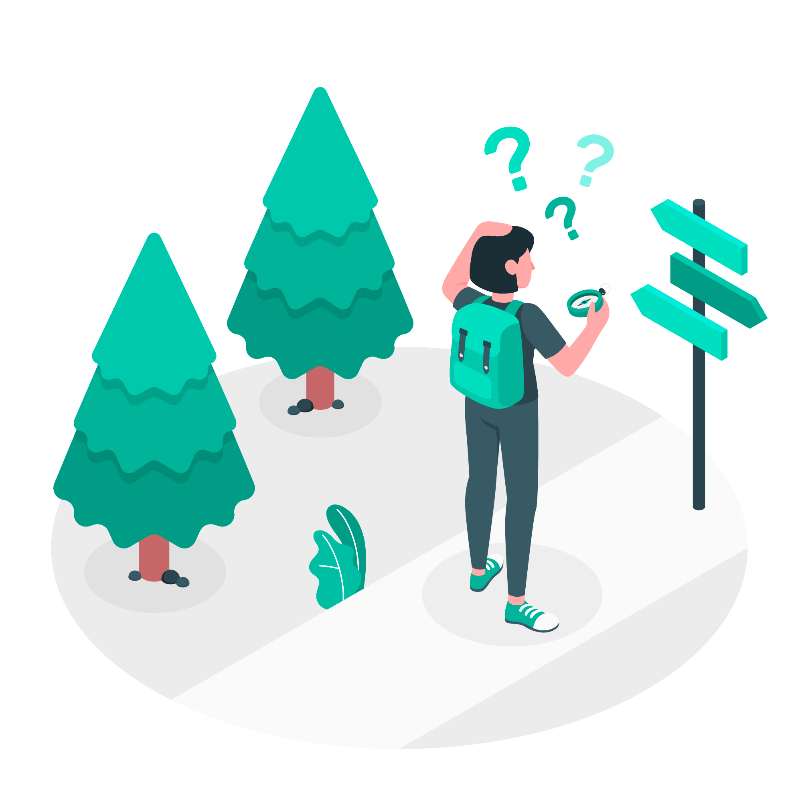

<section class="section">
    <div class="custom-card">
        <div class="illu-wrap">
            
        </div>
        <div class="info-wrap">
            <h4>Page Not Found</h4>
            <h5>You seem to be lost, the page you are looking for does not exist.</h5>
            <button class="btn btn-sm btn-secondary" (click)="backToHomePage()">Go back to homepage</button>
        </div>
    </div>
</section>